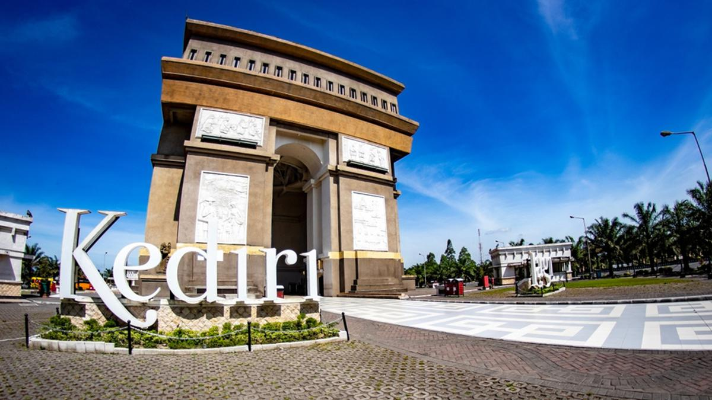
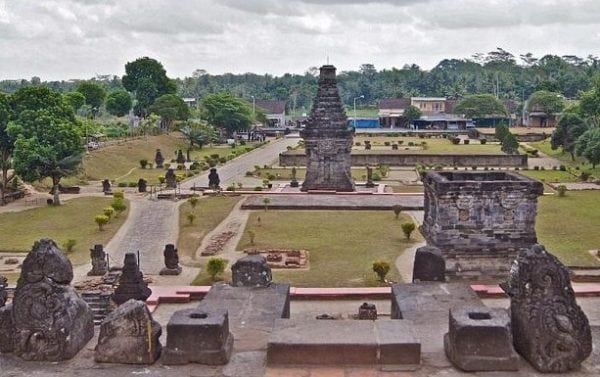
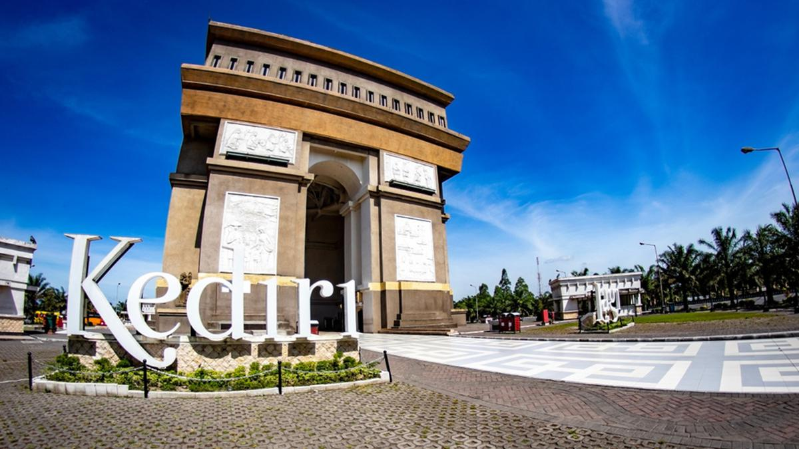
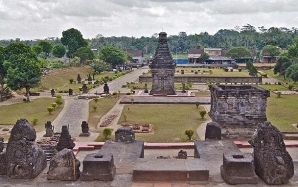
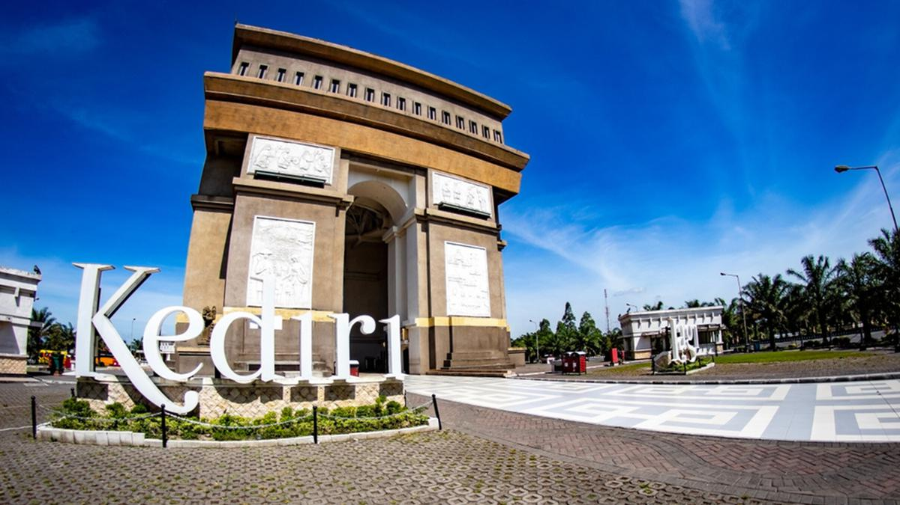
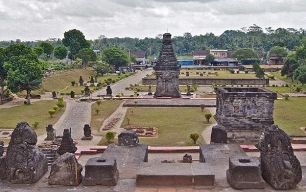
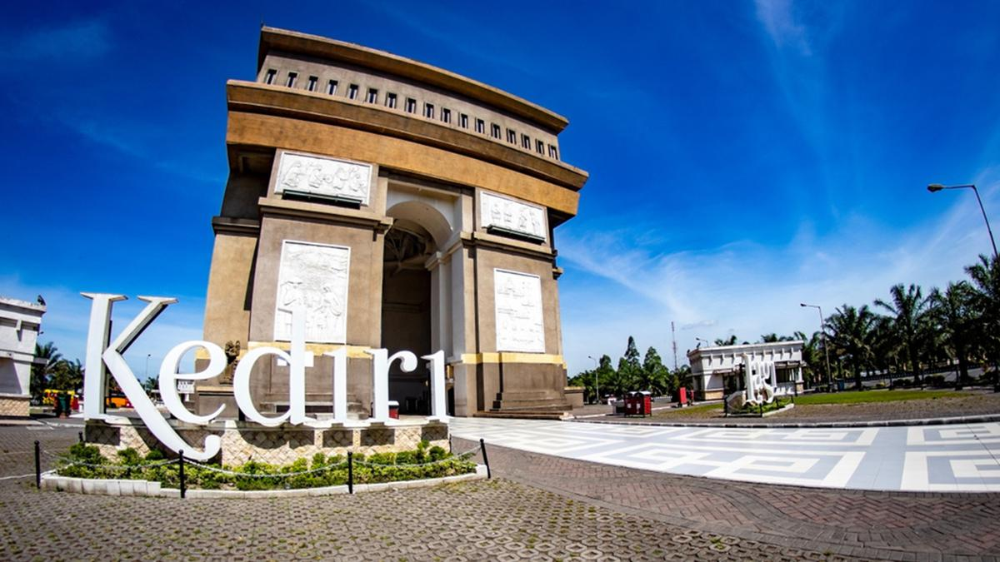
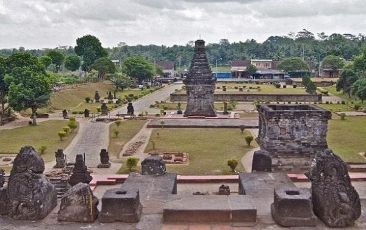

Gunung Kelud is both a majestic and formidable active volcano that stands as the iconic natural landmark of the Kediri region. More than just a mountain, it is a powerful testament to the raw forces of nature, offering a tourist experience that has been dramatically shaped by its history of powerful eruptions, most notably the transformative event of 2014.
Simpang Lima Gumul is the grand and unmistakable modern icon of the Kediri Regency, a magnificent structure often dubbed the "Arc de Triomphe of Java" for its striking resemblance to the famous Parisian landmark. Standing proudly at the center of a bustling five-way roundabout, this massive arch serves as a monumental gateway connecting the major districts of the regency. While its architectural inspiration is global, its soul is deeply rooted in local history, built to symbolize the vision of the ancient King Jayabaya to unite the five surrounding regions. More than just a replica, its walls are adorned with intricate reliefs depicting the rich history, culture, and agricultural prosperity of Kediri.
Goa Selomangleng is a place where history, legend, and spirituality converge, making it one of Kediri's most mystical and revered historical sites. Carved by human hands from a massive andesite boulder nestled at the foot of Mount Klotok, this is not a natural cavern but an ancient hermitage cave. Its fame is inextricably linked to the captivating legend of Dewi Kilisuci, a crown princess of the Kahuripan Kingdom who is said to have renounced her royal life and worldly possessions to pursue asceticism and deep meditation within these very walls.

Air Terjun Dolo is a breathtaking natural escape tucked away high on the cool, pine-clad slopes of Mount Wilis. This majestic waterfall is not a single, sheer drop, but a series of stunning cascades that tumble down a rugged rock face from a total height of around 125 meters. Situated at an altitude of over 1,200 meters above sea level, a visit here offers a wonderful respite from the lowland heat, immersing you in crisp mountain air and the serene ambiance of the surrounding forest. Reaching the waterfall is part of the adventure, involving a scenic trek down a long flight of stone steps that builds anticipation for the rewarding sight and sound of the gushing water.